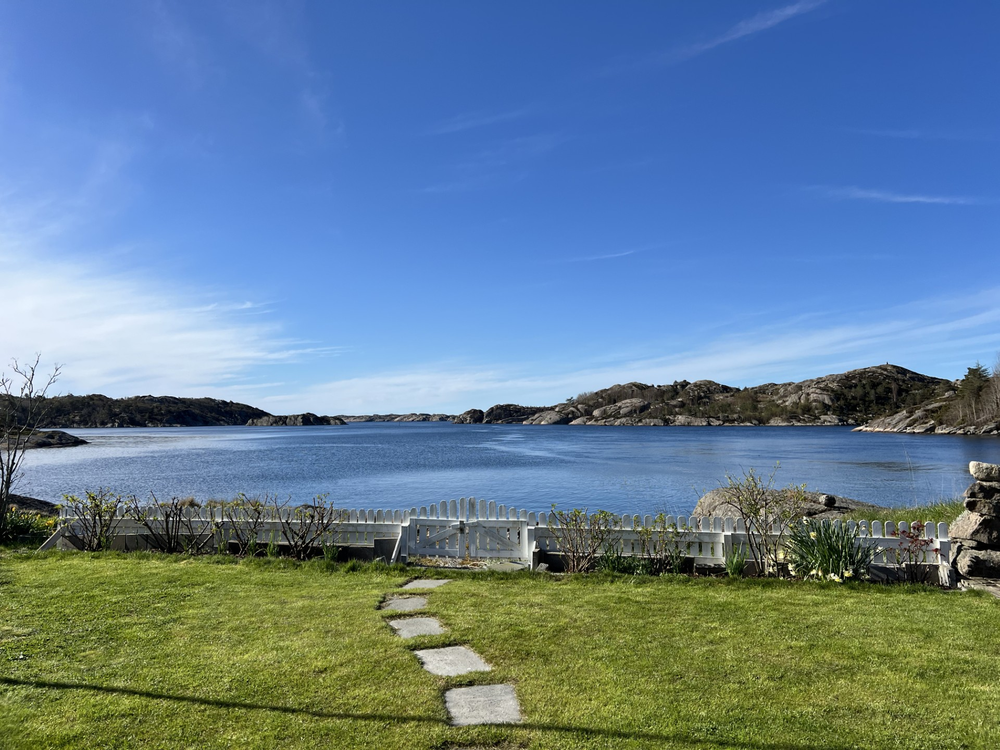
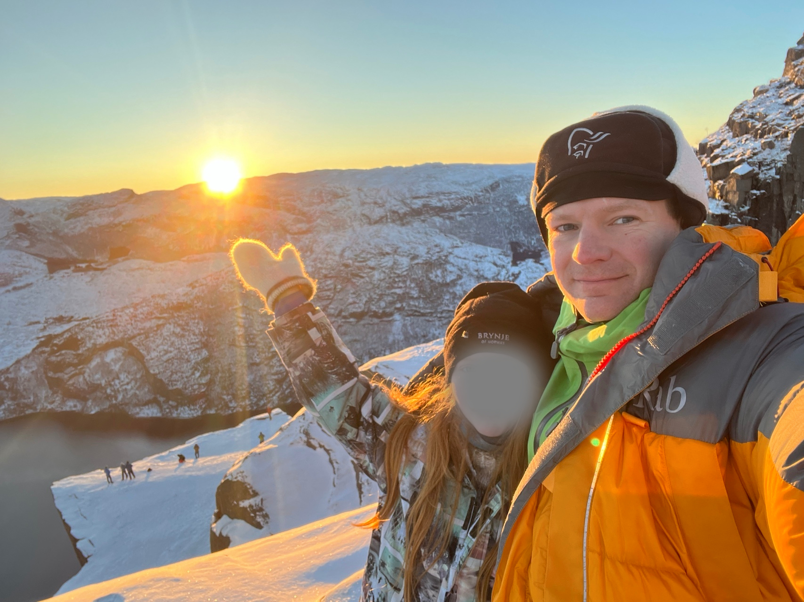

Vi bor på en gård på Malmheim, et sted som gir oss både ro og nærhet til naturen. Familien min består av min kone Hege og våre to barn, Amalie og Ole. Vi setter stor pris på tiden sammen, og familien er en viktig kilde til støtte og balanse i hverdagen.
Gjennom livet på gården lærer vi verdien av fellesskap, ansvar og hardt arbeid. Disse erfaringene former oss som personer, og de gir et solid fundament for både personlig og profesjonell vekst.

Jeg er lidenskapelig opptatt av å tilegne meg ny kunnskap, også utenom arbeidstid. Dette kommer til uttrykk gjennom alt fra formelle studier, som emner innen kunstig intelligens ved NTNU, til selvstyrt læring via nettkurs og sertifiseringer innen teknologi, ledelse og økonomi.
Jeg bruker også tid på å følge med på det nyeste innen fagfeltet via bransjenettsteder, YouTube-kanaler og podkaster. Denne kontinuerlige faglige nysgjerrigheten bidrar til at jeg holder meg oppdatert og utvikler meg i takt med teknologien og arbeidslivets krav – og ikke minst, det gir meg stor glede.

Vårt andre hjem. En del av fritiden tilbringes ved kysten sør for Mandal, i rolige omgivelser som gir rom for restitusjon og balanse. Området gir gode muligheter for friluftsliv og naturopplevelser, og fungerer som en viktig motvekt til en ellers strukturert og målrettet hverdag.
Tiden benyttes ofte til praktiske og jordnære aktiviteter som fiske, båtliv og vedlikehold knyttet til det enkle hyttelivet. Dette gir anledning til både fysisk aktivitet og mental tilstedeværelse, noe som oppleves som verdifullt i et liv preget av ansvar og tempo.
Oppholdet ved sjøen gir dermed et naturlig pusterom og bidrar til økt overskudd, fokus og refleksjon – kvaliteter som også kommer til nytte i profesjonelle sammenhenger

Siden 2014 har jeg vært et aktivt medlem av Round Table Norge – en organisasjon for samfunnsengasjerte unge menn med fokus på vennskap, nettverksbygging og samfunnsansvar.
Gjennom årene har jeg hatt gleden av å bidra både lokalt, nasjonalt og internasjonalt. Jeg har hatt flere styreverv, blant annet som en del av det lokale styret og senere også i nasjonal sammenheng. Dette engasjementet har gitt verdifull erfaring innen ledelse, organisasjonsutvikling og tverrkulturelt samarbeid.
Deltakelsen i Round Table har styrket mine evner til å jobbe målrettet i team, bygge relasjoner på tvers av bakgrunner og bidra til positive samfunnsinitiativ – erfaringer jeg tar med meg inn i det profesjonelle livet.
Jakt er en viktig del av fritidsaktivitetene mine, og noe jeg har hatt glede av gjennom flere år. Jeg deltar hovedsakelig i småviltjakt, både i fjellet og i kystnære områder, med jaktsesongen som starter 10. september som et fast høydepunkt.
Jakt gir ikke bare naturopplevelser, men også trening i tålmodighet, konsentrasjon og respekt for naturens balanse. Det krever planlegging, trygg våpenhåndtering og god dømmekraft – ferdigheter som er overførbare til mange profesjonelle sammenhenger.
For meg handler jakt om å være til stede i naturen, ivareta tradisjoner og bidra til bærekraftig forvaltning av viltressurser.
Utover jakt benytter jeg naturen aktivt gjennom hele året, og friluftsliv er en viktig kilde til både fysisk aktivitet og mental balanse. Jeg tilbringer tid ute i naturen både sommer og vinter, og finner særlig glede i toppturer til fots eller på truger – gjerne under vindstille og skyfrie forhold, hvor stillheten og utsikten virkelig lar naturen komme til sin rett.
Friluftsliv gir verdifull avkobling og styrker evnen til tilstedeværelse og refleksjon. Opplevelsen av naturens skiftninger og behovet for forberedelser og respekt for omgivelsene bidrar til utvikling av egenskaper som planleggingsevne, utholdenhet og besluttsomhet – kvaliteter som også er nyttige i arbeidslivet.

Fysisk aktivitet og bevisst forhold til ernæring er en integrert del av hverdagen min. Jeg kombinerer utholdenhetstrening, som sykling og jogging, med styrketrening for å opprettholde god fysisk og mental helse.
Dette engasjementet har blant annet ført til deltakelse i to Ironman-konkurranser – en krevende utfordring som setter både kroppen og hodet på prøve. Ironman handler ikke bare om å mestre de tre fysiske disiplinene – svømming, sykling og løping – men også om den fjerde og ofte undervurderte: ernæring. Et bevisst og strukturert forhold til kosthold er avgjørende for å gjennomføre løpet på en trygg og effektiv måte.
Gjennom treningen og forberedelsene har jeg utviklet evner som målrettethet, selvdisiplin, langsiktig planlegging og evnen til å håndtere uforutsette utfordringer – ferdigheter som også har stor overføringsverdi til arbeidslivet.